Intro
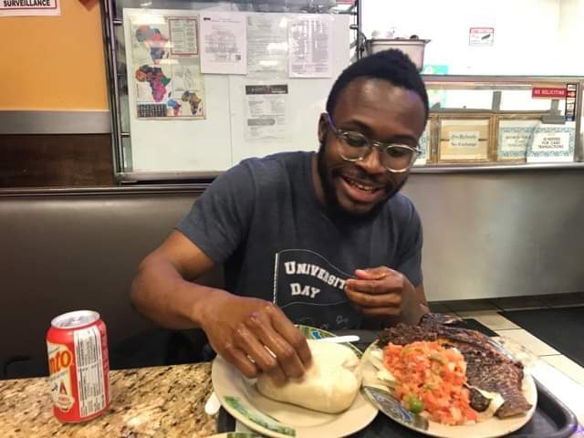
I am a PhD student in the Computer Science Department at Carnegie Mellon Univeristy co-advised by Ameet Talwakar and Graham Neubig. Before starting my PhD, I was Research Engineer at Facebook AI Research (FAIR) in Seattle. My current research interests broadly covers Meta-Learning situated in the context of Natural Language Processing.
I have previously worked in Computer Vision - specifically CV algorithms for High Energy Physics (HEP) and Video Understanding. I did my undergrad (Physics) and Masters (Computer Science) at Stanford University.
Outside of A.I, I am very passionate about Music, Art , Neuroscience, Philosophy and Food !!.
2021 Book List
- Project Hail Mary - Andy Weir
- Hold Everything Dear - John Berger
- Guns, Germs and Steel - Jared Diamond
- Hyperbole and Half - Allie Brosh
- Ministry For The Future - Kim Stanley Robinson
In Progress
- Capital in the 21st Century - Thomas Picketty
- Letters to my palestinian neighbor - Yossi Klein Halevi
- Infinite Jest - David Foster Wallace
2020 Book List
- The Stranger - Albert Camus
- Awards for good boys - Shelby Lorman
- The Game - Neil Strauss
- Predictably Irrational - Daniel Ariely
- The Genealogy of Morals - Friedrich Nietzsche
- The Three-Body Problem - Cixin Liu
- Atomic Habits - James Clear
- Modern Ethics in 77 Arguments : A Stone Reader
- Dune - Frank Herbert
2019 Book List
- Man's Search For Meaning - Viktor Frankl
- Reductionism in Art and Brain Science - Eric R. Kandel
- The Myth of Sisyphus - Albert Camus
- Logic Comix - Apostolos Doxiadis, Christos Papadimitriou
- The New Jim Crow - Michelle Alexander
- The Fifth Season - N.K. Jemisin
- Deep Work - Cal Newport
- The Riddle Master Series [3 Books] - Patricia McKillip
- His Dark Materials [3 Books] - Phillip Pullman
- The Upward Spiral - Alex Korb
- Portraits of Resilience - Daniel Jackson
Education
| Aug 2019 - May 2023 |
PhD in Computer Science
Carnegie Mellon University
|
| Sept 2016 - June 2018 |
Masters in Computer Science ** Tau Beta Pi
Stanford University
|
| Sept 2013 - June 2017 |
Bachelors in Physics, Minor in Computer Science ** with Distinction
Stanford University
|
Experience
| July 2020 - August 2020 |
Research Intern, Google Brain - Google
|
| July 2018 - July 2019 |
Software Engineer, Facebook A.I Research - Facebook
|
| June 2017 - Sept 2017 |
Software Engineering Intern, Applied Machine Learning - Facebook
|
| June 2016 - Sept 2016 |
Software Engineering Intern, Terra Bella - Google
|
| June 2015 - Sept 2015 |
Software Engineering Intern, Google Analytics - Google
|
Publication List
 Auxiliary Task Update Decomposition : The Good, The Bad and The Neutral
Auxiliary Task Update Decomposition : The Good, The Bad and The Neutral
Lucio Dery, David Grangier, Yann Dauphin
ICLR, 2021
|
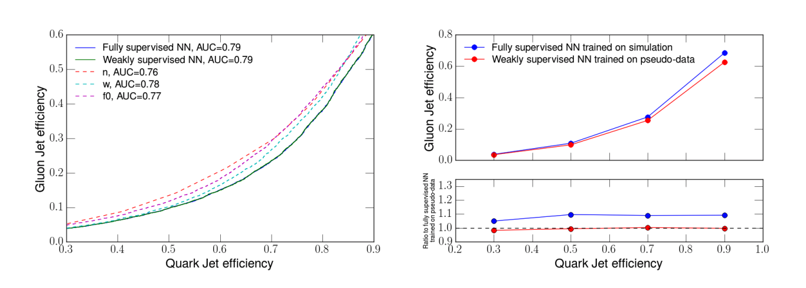
Weakly supervised classification in high energy physics
Lucio Mwinmaarong Dery , Benjamin Nachman, Francesco Rubbo, Ariel Schwartzman
Journal of High Energy Physics 2017.5 (2017): 1-11
|
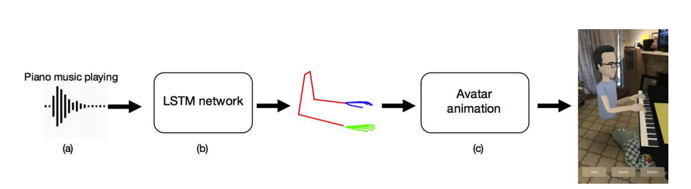
Audio to Body Dynamics
Eli Shlizerman, Lucio Dery, Hayden Schoen, Ira Kemelmacher. “Audio to Body Dynamics.”
CVPR, 2018
|
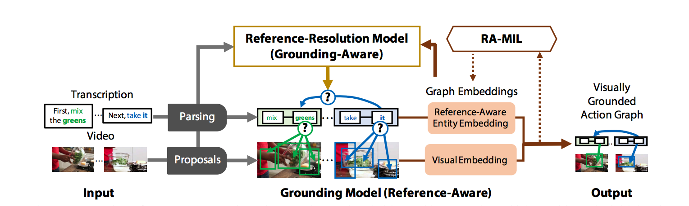
Finding ‘It’: Weakly-Supervised Reference-Aware Visual Grounding in Instructional Video
D.A-Huang, Shyamal Buch, Lucio Dery, Animesh Garg, Li Fei-Fei, Juan Carlos Niebles
CVPR, 2018
|
Teaching
| Winter 2018 |
Head Teaching Assistant, Deep Learning (CS230) Stanford University
|
| Spring 2018 |
Course Assistant, Deep Learning (CS230) Stanford University
|
| Fall 2017 |
Course Assistant, Machine Learning (CS229) Stanford University
|
| Winter 2014 - Spring 2017 |
Section Leader, Programming Abstactions (CS106A) Stanford University
|
| Winter 2014 - Spring 2017 |
Section Leader, Programming Methodology (CS106B) Stanford University
|
Email :
ldery [at] andrew [dot] cmu [dot] edu
Working on getting better at drawing and painting ! I hope I find the time. Here's some random artwork I've made in the past
Art
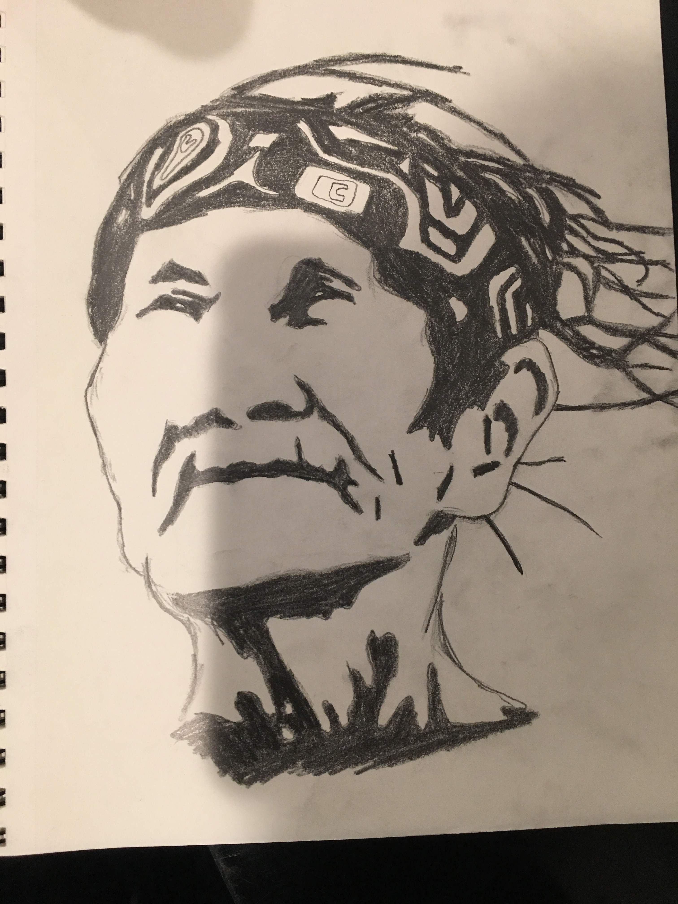
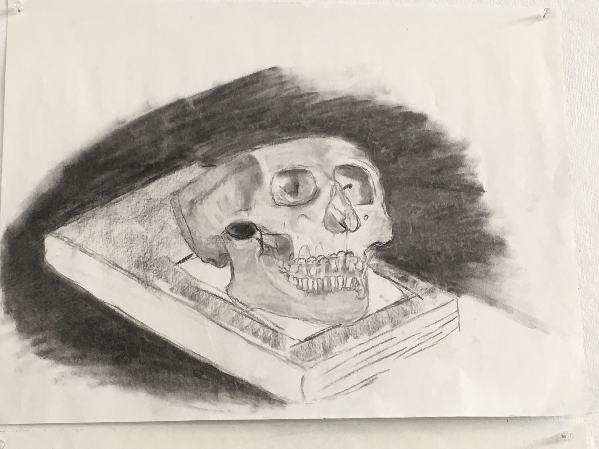
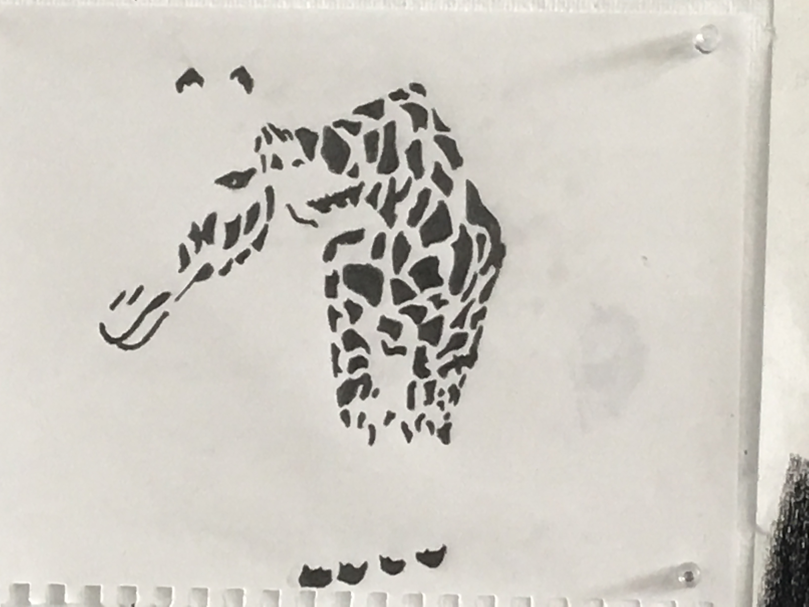
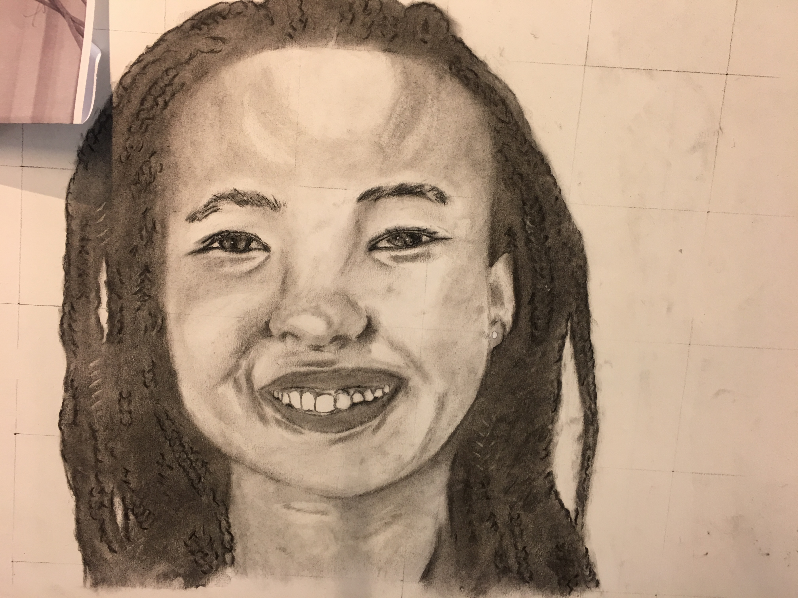
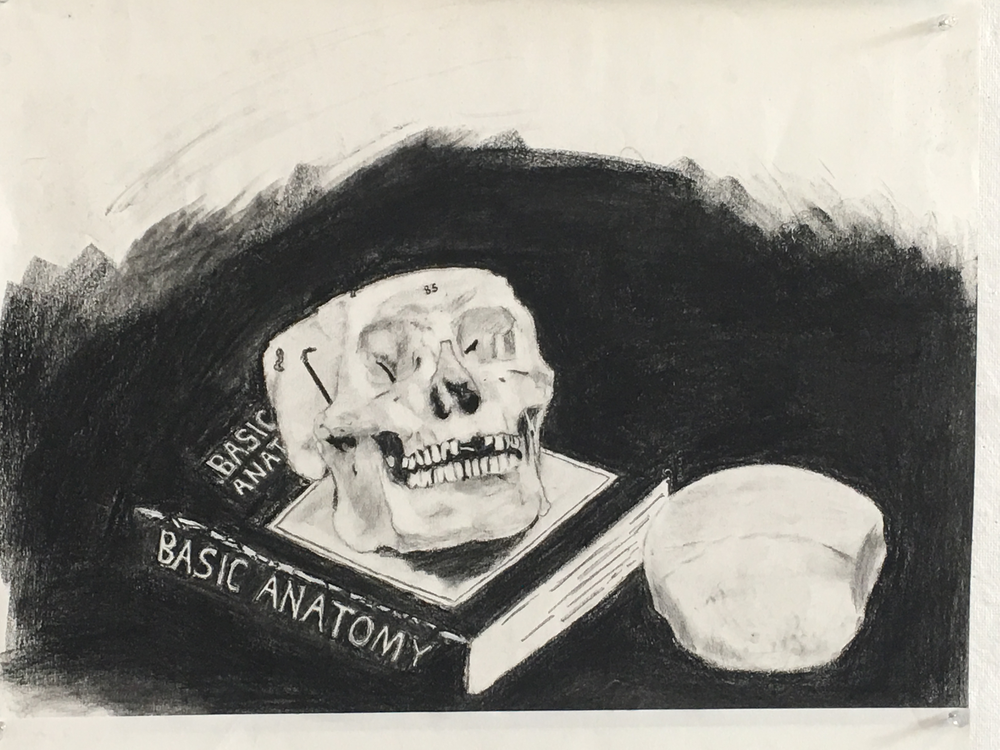
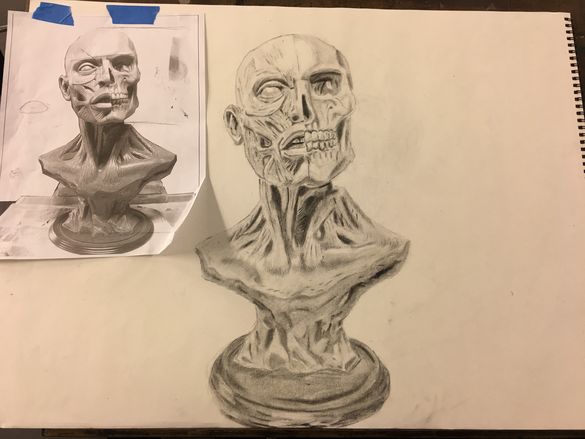
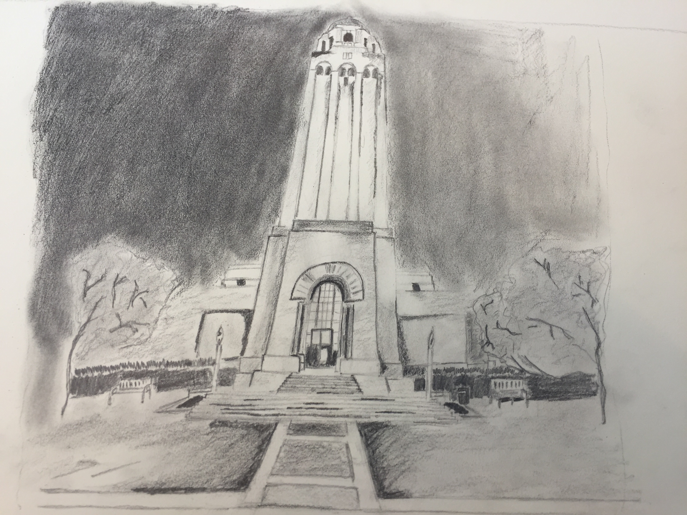
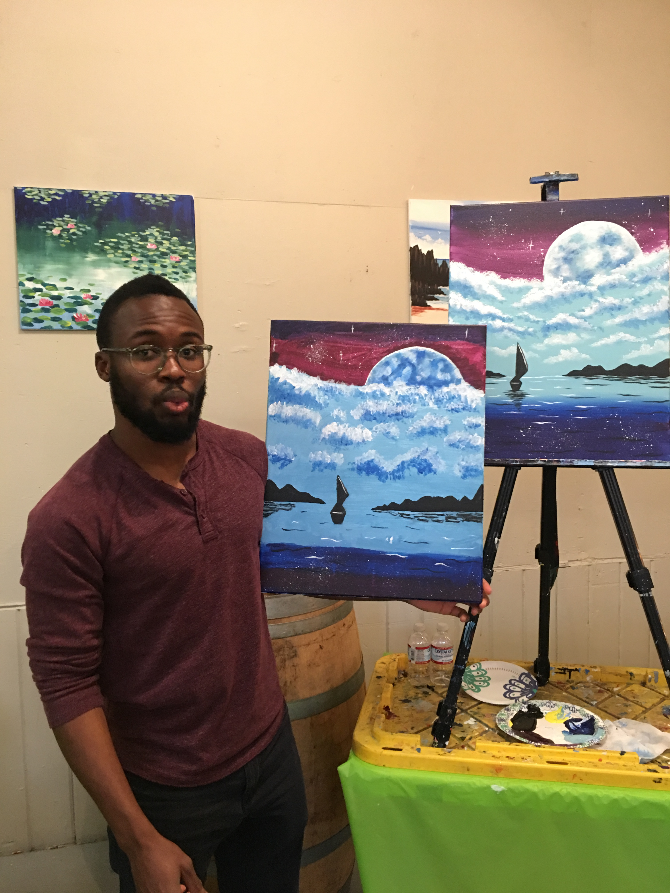
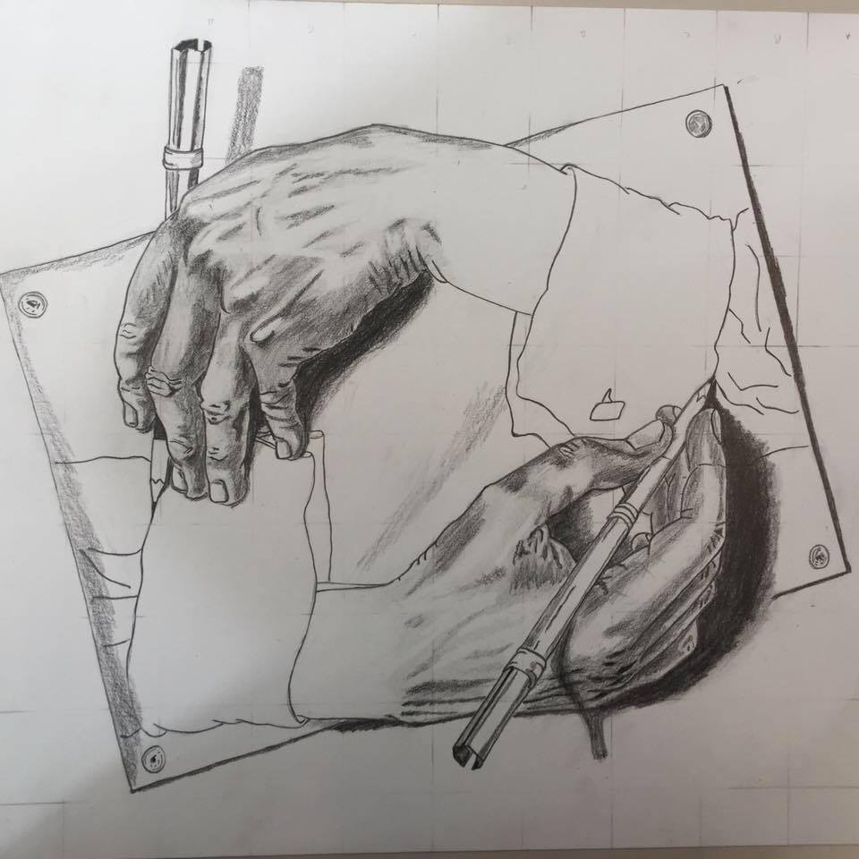
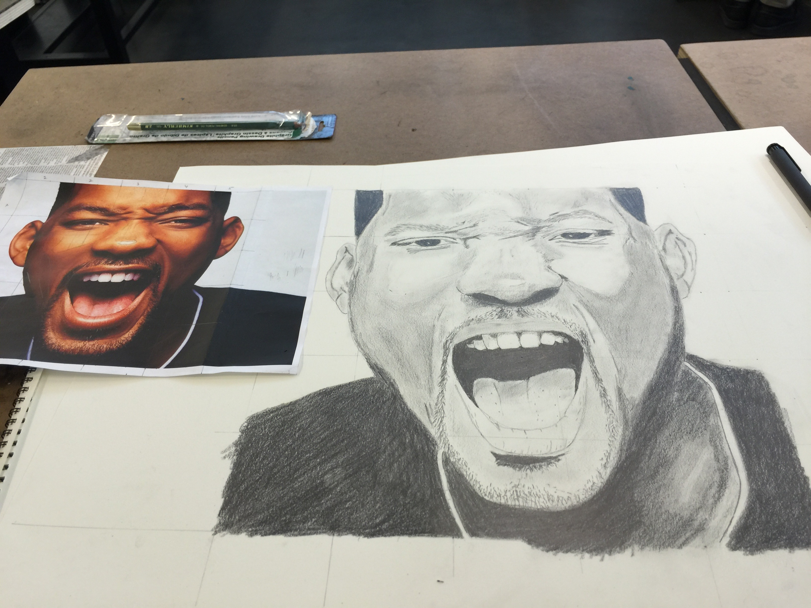